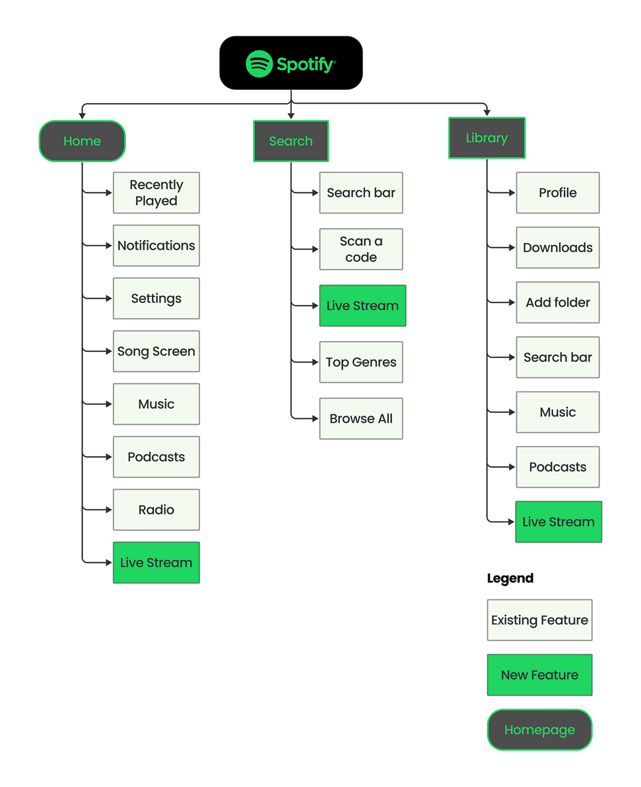

What is Information Architecture:-
Information architecture (IA) is the practice of organizing, structuring, and labeling content in an effective and sustainable way. The goal of IA is to help users find information and complete tasks efficiently. This involves creating a clear structure for websites, applications, or other digital environments, ensuring that the user experience is intuitive and user-friendly.
The main goals of information architecture is:-
* Enhance usability by making information easy to find and navigate.
* Improve user satisfaction by providing a seamless and intuitive experience.
* Support the overall business objectives by ensuring that users can achieve their goals effectively.
Information Architecture Map of Spotify App

Real World Examples of Information Architecture:-

Information Architecture following four Elements from basis of AI:-
* Taxonomy (Organization Systems)
* Ontology (Labeling Systems)
* Choreography (Navigation Systems)
* Search (Search Systems)
Taxonomy is the science or technique of classification, putting like elements together. taxonomic hierarchy is used to categorize information. things can be seperated in different ways, for examples: importance or frequency of use, recentness ,alphabatically, numericvally, and so on.
Ontology is the meaning of the product's elements. it is about labeling systems, that is how the informantion is represented.
Navigation systems provide pathways for users to explore and find content. Effective navigation ensures users can move through the content with ease.
Search systems allow users to find specific information quickly through search functionality.
Example of taxomnomy decipting the scientific classification of Animals:-

Example of Ontology in a Supermarket:-

Example of Navigation system in a website design:-

IA and UX Design How do they Relate:-
Ai
* Focuses on structure of information
* The foundation & Blueprint.
* Makes your sites easier to navigate.
Ux
* Focuses on emotions of users.
* The finished product.
* Makes sure you're having fun with navigating.